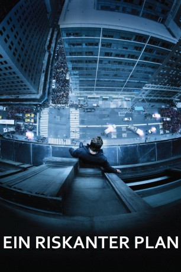

gesehen am 29.10.2015
gesehen am 29.10.2015Alternativ: Man on a Ledge gesehen am 29.10.2015
 
 IMDB-Wertung: 6.6 / 10
IMDB-Wertung: 6.6 / 10  Metascore:
Metascore: 
Nick Cassidy war einst ein erfolgreicher Cop mit einem nahezu perfekten Leben. Doch plötzlich findet er sich im Gefängnis wieder, für ein Verbrechen, das er nicht begangen hat. Wie weit kann ein Mann gehen, um seine eigene Unschuld zu beweisen? Völlig verzweifelt nutzt er die erstbeste Gelegenheit, die sich ihm bietet, zur Flucht und steigt mit einem ausgeklügelten Plan im Kopf auf den Fenstersims eines Hochhauses.
Jahr: 2012
Dauer: 102 Minuten
FSK: 12
Land: USA Studio: Summit EntertainmentTonspuren: DTS - ,
Untertitel: Deutsch,
Auflösung: 1080p (1920x800) Größe: 6809 MB
Genre: Action, Abenteuer, Krimi, Thriller
Regisseur: Asger Leth
Drehbuch: Pablo F. Fenjves
Soundtrack: Henry Jackman
Darsteller:
 Sam Worthington als Nick Cassidy
Sam Worthington als Nick Cassidy William Sadler als Valet
William Sadler als Valet J. Smith-Cameron als Psychiatrist
J. Smith-Cameron als Psychiatrist Anthony Mackie als Mike Ackerman
Anthony Mackie als Mike Ackerman Jamie Bell als Joey Cassidy
Jamie Bell als Joey Cassidy Genesis Rodriguez als Angie
Genesis Rodriguez als Angie Robert Clohessy als Prison Guard
Robert Clohessy als Prison Guard Joe Lisi als Desk Sergeant
Joe Lisi als Desk Sergeant Edward Burns als Jack Dougherty
Edward Burns als Jack Dougherty Titus Welliver als Dante Marcus
Titus Welliver als Dante Marcus Elizabeth Banks als Lydia Mercer
Elizabeth Banks als Lydia Mercer Daniel Sauli als Police Technician
Daniel Sauli als Police Technician Kyra Sedgwick als Suzie Morales
Kyra Sedgwick als Suzie Morales Frank Pando als Cameraman
Frank Pando als Cameraman Ed Harris als David Englander
Ed Harris als David Englander Sylvia Kauders als Angry Traffic Woman
Sylvia Kauders als Angry Traffic Woman Felix Solis als Nestor
Felix Solis als Nestor Jonathan Walker als Investor
Jonathan Walker als Investor Terry Serpico als Lutz
Terry Serpico als Lutz Arthur J. Nascarella als Construction Worker
Arthur J. Nascarella als Construction Worker Jimmy Palumbo als Detective
Jimmy Palumbo als Detective Geoffrey Cantor als Gordon Evans
Geoffrey Cantor als Gordon Evans Frank Anello als NYPD Officer , uncredited
Frank Anello als NYPD Officer , uncredited James Thomas Bligh als Seargent , uncredited
James Thomas Bligh als Seargent , uncredited Marmee Cosico als ND Pedestrian , uncredited
Marmee Cosico als ND Pedestrian , uncredited Jeff Grossman als Brooklyn Cop , uncredited
Jeff Grossman als Brooklyn Cop , uncredited Bill Walters als Sing Sing Background , uncredited
Bill Walters als Sing Sing Background , uncreditedDatei: X:\2012(N-Z)\Riskanter Plan, Ein (2012, FSK12, 1920x800).mkv seit 27.02.2015
Festplatte: HD 2012(N-Z)-2013(A-H)
 Es gibt insgesamt 138 Filme in der Gruppe '2012(N-Z)'
Es gibt insgesamt 138 Filme in der Gruppe '2012(N-Z)'